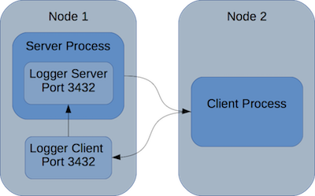

Getting logging in distributed environment
Synopsis
Motivation
Python has a very nice logging package. That is until you try to work it over distributed environment. In particular, the socket based logging mechanism and its examples are not robust enough to be used in a more complex environment. If you try, you will find that not all messages are ending in logs. Or that process does not end.
Driving architecture
The architecture is of that a server process submit processing in multiple machines. Remote process send back logging data.
Example use
Here is a simplistic example for which we needed the logging environment to work. In this example, clients are local. However, we use SSH channels based on SSH agents to pass logging information between hosts. This example is adopted from Sending and receiving logging events across a network
The expected results from this example:
Note that messages are not printed in order. Reason is that the solution uses ThreadingTCPServer in which threads are open to read individual requests. Therefore order is not guarenteed.